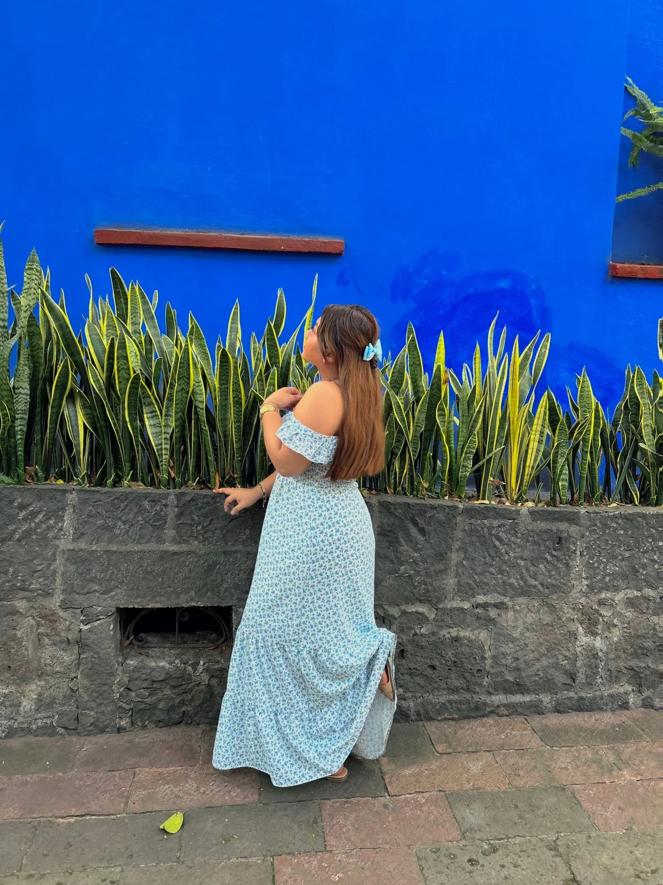

Me and the person opposite of me
They say opposites attract, and that couldn't be more true in my case.
My girlfriend and I are completely different in almost every way,
yet somehow, we balance each other perfectly.
Me: The Introverted Otaku
-
I am the kind of person who enjoys solitude. My perfect day consists of staying in my room,
playing video games, and watching anime. I rarely go out, and if I do, it’s probably just to
buy snacks before heading straight back to my comfort zone. Social events? No, thanks. I’d
rather spend time leveling up my character in an RPG than making small talk with strangers.
My style is simple—hoodies, sneakers, and anything comfortable. I don’t care much about trends, and I feel more excitement over a new anime season than over any fashion item. My playlist? Full of anime openings, lo-fi beats, and epic soundtracks from my favorite games.
Her: The Social Butterfly
-
My girlfriend, on the other hand, is the total opposite. She loves going out, meeting people,
and experiencing new things. Dressing up is part of her daily routine, and she always looks
stylish, no matter the occasion. While I prefer a quiet night at home, she enjoys café-hopping,
shopping, and taking cute pictures for her social media.
She listens to pop and reggaeton, always up to date with the latest trends. If there’s a party, she’s the first to say yes, while I’d rather stay home and grind through my favorite game. While I geek out over anime, she’s more into romantic movies and lifestyle content.

Why It Works
Even though we live in completely different worlds, we balance each other out. She encourages me to try
new things, while I help her appreciate the joy of a chill night in. She might never understand my
excitement over a new anime episode, and I might never get why she loves shopping so much—but at the
end of the day, our differences make our relationship special.